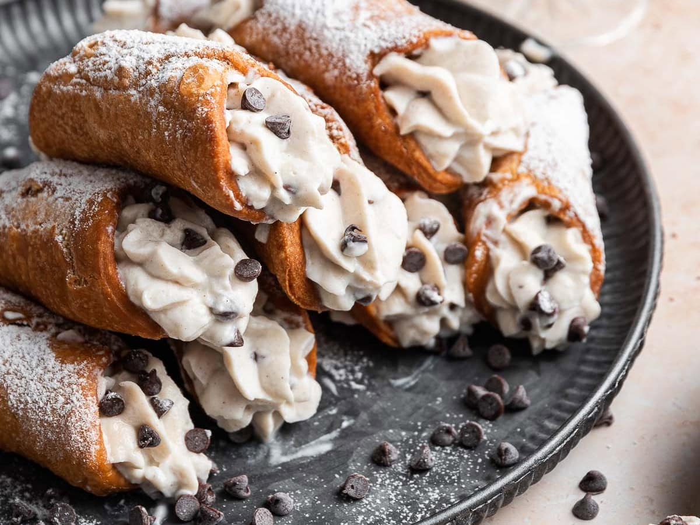

Sobremesas
Cannoli

O Cannoli (plural de cannolo em italiano)é uma icônica sobremesa tradicional da Sicília, Itália, que consiste em uma casca de massa doce frita em formato de tubo, recheada com um creme de ricota.
Ingredientes
- 400 g de farinha de trigo
- 40 g de açúcar
- 5 g de canela
- 10 g de sal
- 120 ml de vinho branco
- 1 ovo
- 1 gema
- 1 pote de doce de leite
- 1 pote de creme de chocolate
Modo de preparo
- Misture todos os ingredientes e faça uma massa.
- Deixe a massa descansando de um dia para o outro.
- Abra a massa, corte com um aro e enrole na canoleira para fritar.
- Frite por 15 minutos em fogo alto e retire da panela.
- Deixe esfriar e volte para o óleo quente para fritar um pouco mais o lado de dentro do canudo.
- Com uma manga de confeiteiro (saco de confeitar), coloque o recheio dentro.
- A dica é que a casquinha esteja fina; assim, basta colocar o recheio de forma abundante.
Turamisù

O tiramisù é uma sobremesa italiana feita com biscoitos embebidos em café e creme de mascarpone, polvilhada com cacau. O nome significa “levanta-me”, por seu efeito estimulante.
Ingredientes
- 6 claras em neve
- 6 gemas peneiradas
- 1/2 lata de leite condensado
- 500 g de queijo tipo mascarpone (pode ser trocado por cream cheese ou outro queijo cremoso, exceto ricota)
- 1 pacote de biscoito tipo champagne (sem açúcar em cima)
- 1 xícara de café bem forte (sem açúcar)
- 1 dose pequena de licor (chocolate, café, amêndoa, ou conhaque)
- chocolate em pó para polvillhar por cima
Modo de preparo
- Em uma vasilha grande, misture gentilmente o queijo e o leite condensado, acrescente as gemas peneiradas até formar um creme meio amarelado claro.
- Em seguida, acrescente as claras, mas não misture muito.
- O segredo da receita é a paciência: misture bem suave e reserve este creme.
- Em outra vasilha, coloque o café e o licor de sua preferência e molhe o biscoito rapidamente no café (o biscoito não deve ficar muito molhado).
- Disponha em um refratário retangular.
- Monte em camadas: 1 camada de biscoito, 1 camada de creme — a última camada deve ser de creme.
- Polvilhe o chocolate em pó por cima.
- Leve à geladeira coberta com plástico filme por aproximadamente 6 horas.
↑Topo